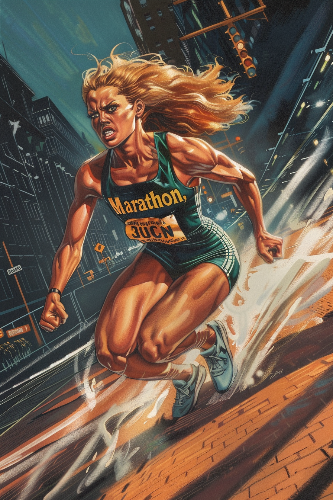

MARATHON: THE RUNNER'S EDGE

Elena Pappas came from a family of runners. Her grandfather competed in the Boston Marathon twelve consecutive years. Her mother qualified for the Olympic trials. The Pappas name appeared in local running club records going back three generations.
Elena seemed destined to continue this legacy, showing remarkable endurance even as a child. But while her family celebrated traditional athletic achievement, Elena's relationship with running went deeper. For her, running wasn't just movement—it was a state of mind, a way of processing the world.
Growing up in Boston's Brighton neighborhood, Elena used the city streets as her training ground. She knew every alley, shortcut, and dead-end from Allston to Brookline. Her high school track coach called her "GPS in sneakers" for her uncanny ability to calculate optimal routes on the fly.
MIT recruited her for their engineering program after she designed a revolutionary running shoe as a high school project. Her academic work focused on biomechanics and efficiency of movement, with research that attracted attention from both athletic companies and military contractors.
Everything changed during her junior year. While running data collection for her research along the Charles River, Elena witnessed a boat collision. Without hesitation, she dove into the water to help. As she pulled survivors to shore, observers were stunned by her speed—moving across water and land faster than humanly possible.
The stress of the emergency had triggered a latent metahuman ability. Elena found herself processing time differently when in motion. The faster she moved, the more the world seemed to slow around her. Her perception, reaction time, and physical capabilities all amplified with speed.
Initially, Elena tried to ignore these changes. She withdrew from competitions, knowing her abilities would give her an unfair advantage. She focused on her research instead, using herself as a test subject to study the theoretical limits of human movement.
Meanwhile, reports spread of a mysterious figure rescuing people from accidents across Boston—appearing suddenly at crash sites, pulling people from burning buildings, stopping assaults in progress. Few connected these incidents to the quiet engineering student who ran at odd hours.
Samuel Revere made the connection. After tracking Elena's movements for weeks, he approached her after a particularly daring rescue. Elena expected recruitment to a government program or research initiative. Instead, Sam offered something that had been missing since her abilities emerged: purpose.
The Minutemen needed someone who could respond to crises across the city in moments, someone who could evacuate civilians and provide rapid reconnaissance. For Elena, it was an opportunity to use her abilities without compromising her principles.
As Marathon, Elena serves as the team's rapid response specialist. Her speed allows her to reach emergencies before other members, assess situations, and begin civilian evacuation. In combat, she strikes from multiple angles, creating the impression of several fighters attacking simultaneously.
Her specialized equipment complements her abilities. The friction-resistant suit she designed prevents heat buildup at high speeds. Her reinforced gloves allow her to deliver repeated high-speed strikes without injury. The communications earpiece provides real-time coordination with Beacon, who often directs her movements across the battlefield.
Between missions, Elena continues her research at MIT, now focused on emergency response optimization. Her algorithms for urban evacuation have been adopted by Boston's disaster preparedness office, though officials don't know they were developed by the same person who tests them in real crises.
The constant motion takes its toll. Elena rarely sleeps more than four hours at a stretch, her mind racing even when her body rests. She runs an average of 50 miles daily, burning energy that her accelerated metabolism requires. Her apartment contains minimal furniture but multiple treadmills and equipment for monitoring her physical condition.
Within the team, Elena forms the point of a tactical triangle with Beacon and Liberty—Beacon identifies threats, Marathon engages or evacuates civilians, and Liberty confronts the primary danger. She works well with Greenway during environmental missions, quickly distributing his botanical countermeasures across affected areas.
"Speed isn't just about getting somewhere first," she explains during team training sessions. "It's about having time to make the right decision when everyone else is still processing what happened."